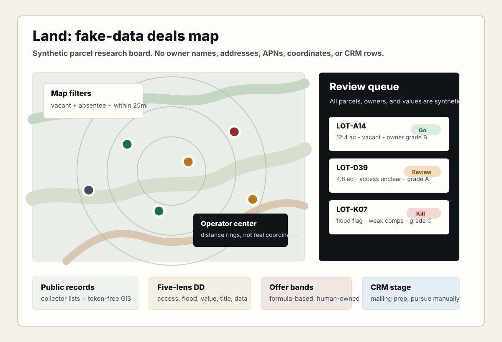
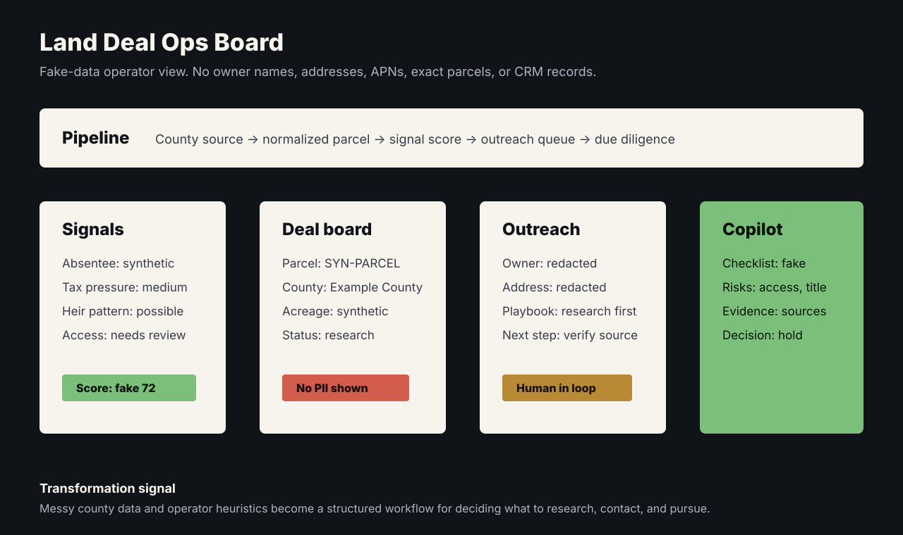
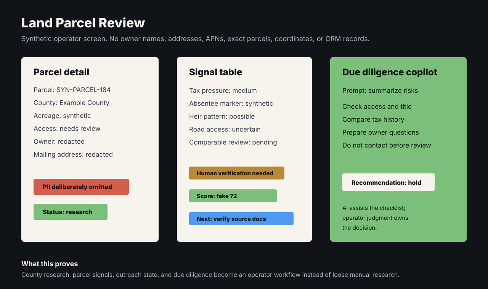
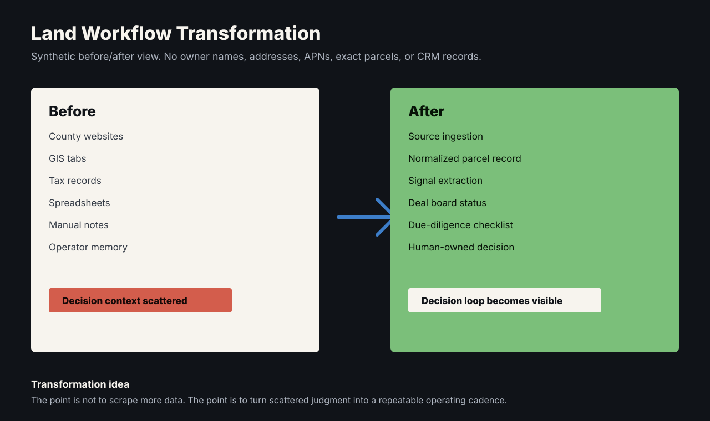
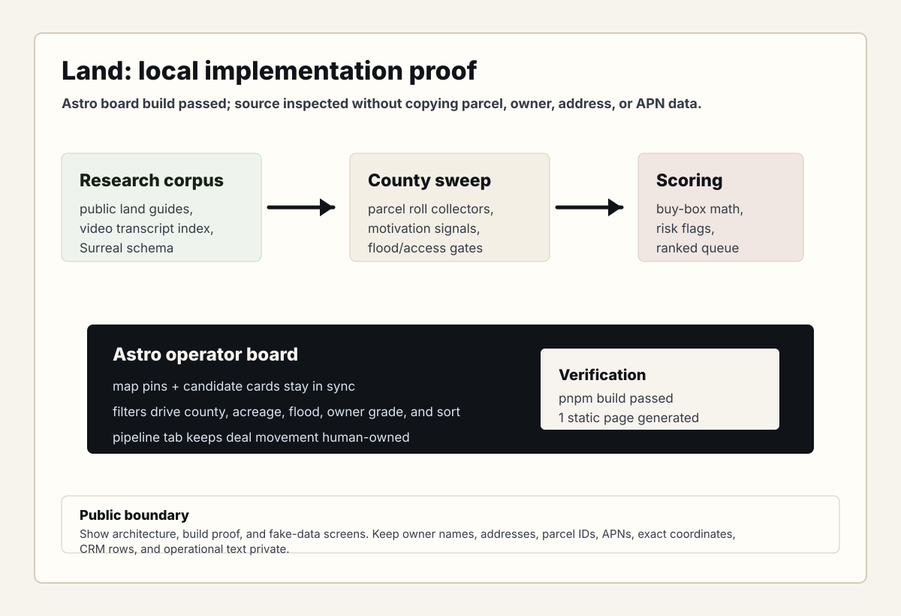

Problem
Land acquisition work often spans county websites, GIS tools, tax records, spreadsheets, playbooks, and operator judgment. The valuable product is not a scraper. It is a workflow that helps a real business decide what to investigate, contact, and pursue.
What I Built
I built a token-free public-data pipeline across five Missouri counties: county collector tax-sale lists, direct GIS parcel queries, and the FEMA flood-hazard layer feed a normalized candidate pool of distressed, absentee, and heir signals. Each owner gets a wealth-footprint grade that estimates motivation to sell, and every candidate passes through five adversarial due-diligence lenses — access, flood, value, title, and data integrity — before it earns a verdict.
Because Missouri is a non-disclosure state, comps cannot simply be looked up; the system reconstructs them, and every reconstructed value is explicitly labeled as an opinion, never presented as fact. Vetted candidates land in an operator kanban CRM, and outreach and pursuit stay human decisions.
System Shape





Technical Decisions
- Treat public-record collection as a pipeline, not a one-off scrape — token-free public data instead of paid APIs.
- Convert domain heuristics into repeatable signals, including owner wealth-footprint motivation grading.
- Make due diligence adversarial: five lenses (access, flood, value, title, data integrity) that try to kill each deal.
- Label every reconstructed value as an opinion, because non-disclosure-state comps are estimates by definition.
- Build an operator-facing board instead of a raw database.
- Keep human judgment in the loop for outreach and deal decisions.
What This Proves
An established land-acquisition methodology, encoded: ~867 delinquent parcels tracked in the primary county, ~150 candidates sourced per daily sweep across 5 counties, every one graded through five due-diligence lenses before a human decides. Manual research became an operating system for a real business.
Public Evidence
- Fake-data land deal board included.
- Source-to-decision workflow represented.
- Signal extraction table represented.
- Five-lens due-diligence verdicts represented.
- Before-and-after workflow diagram included.
- Local Astro board build proof — available on request.
Privacy Boundary
Owner names, addresses, APNs, exact parcels, county-specific operational detail, and CRM data stay private. Every visual above uses fake data. The pipeline, scoring lenses, and board can be walked through live, on request.